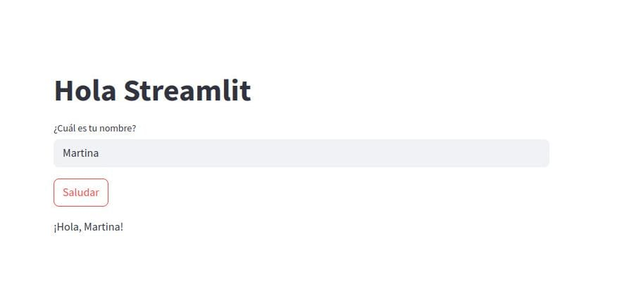

Aplicación de Saludo con Streamlit
Vista previa de la aplicación
Bienvenido/a a la Aplicación de Saludo con Streamlit.
Esta app permite a los usuarios ingresar su nombre y recibir un saludo personalizado de manera sencilla y rápida, utilizando la tecnología de Streamlit. 
Características
- 🚀 Interfaz simple
- 🔄 Actualización en tiempo real
Requisitos
- Python 3.x
- Streamlit (>=1.32.0)
- Navegador web moderno
Estructura del Proyecto
App-Streamlit/
├── app.py # Aplicación principal
├── requirements.txt # Dependencias del proyecto
├── docs/ # Documentación
│ ├── images/ # Imágenes de la documentación
│ ├── index.md # Página principal
│ └── stapp.md # Detalles de la aplicación
├── LICENSE # Licencia del proyecto
└── README.md # Información general
Instalación
- Clona este repositorio:
- Instala las dependencias ejecutando:
Uso
Para ejecutar la aplicación, utiliza el siguiente comando:
La app se abrirá automáticamente en tu navegador web predeterminado enhttp://localhost:8501.
Contribuir
¡Las contribuciones son bienvenidas! Si deseas contribuir:
1. Haz un Fork del proyecto
2. Crea una rama para tu característica (git checkout -b feature/AmazingFeature)
3. Haz commit de tus cambios (git commit -m 'Add some AmazingFeature')
4. Push a la rama (git push origin feature/AmazingFeature)
5. Abre un Pull Request
Para más detalles, consulta nuestra guía de contribución.
Enlaces útiles
Licencia
Este proyecto está bajo la licencia Apache 2.0. Consulta el archivo LICENSE para más detalles.